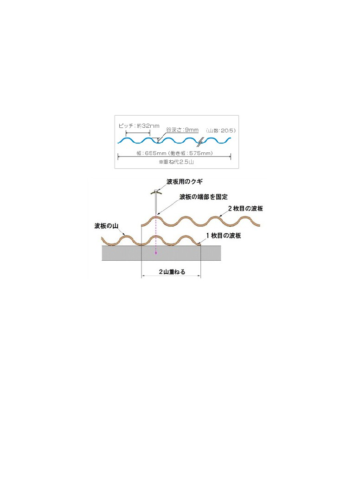

□ポリカの材質
メーカー:タキロン一択（日本製必須。 その他選択肢、 三菱樹脂など）
裏表の施工は厳密にすること。シールの指示に従う。
□ポリカのサイズ（mm）
8 尺（長さ 2,420×幅 655×厚さ 0.7）
□使用個数
10 枚
□色とタイプ
スレート小波（63 波）（JIS 規格なし）
オパール（770T）
□もしくは
鉄板小波（32 波）・・・透明でなく採光はできるもの。（スリガラス状）
クリアマット （650）（厚さ 0.7）
ブロンズマット（850）（厚さ 0.7）
※他、コメリの安いもの 11800 円（送込み）
タキロン子会社。大日本プラスチック製（？）